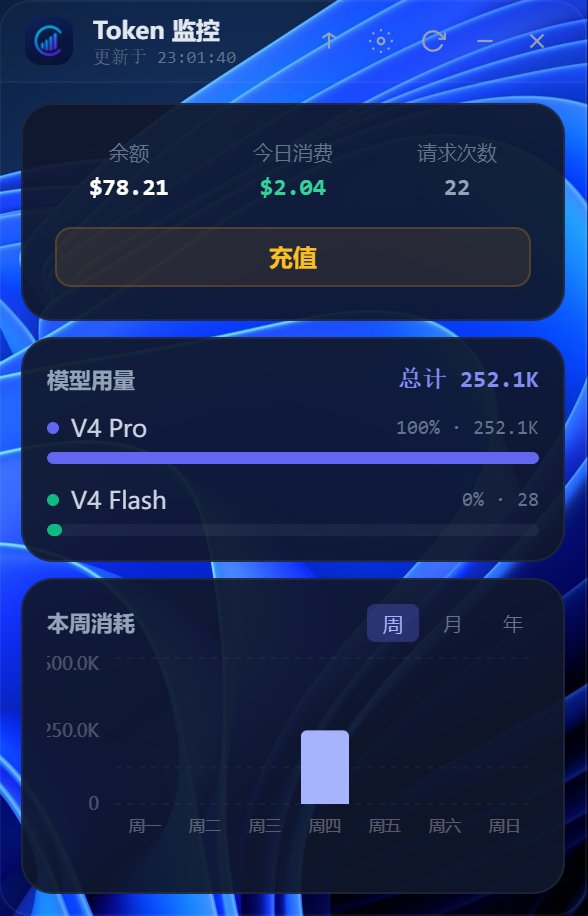

Token Monitor
实时监控你的 AI API 消耗和花费
Token Monitor 是一款桌面悬浮窗工具，可实时显示你的 AI API 余额、今日消费、Token 用量及趋势图，让你随时掌握使用情况，避免超支。
开源下载 →
功能亮点
- 账户概览：顶部显示余额、今日消费和请求次数，数据每分钟刷新，可手动刷新。
- 模型用量：按模型拆分 Token 消耗，进度条直观显示占比。
- 消耗趋势图：支持周 / 月 / 年视图，今天的数据高亮显示，鼠标悬停可查看具体数值。
- 预算告警：设置月度预算和每日阈值，接近上限时变色，超出时弹出桌面通知。
- 窗口管理：支持固定、最小化到托盘、位置记忆和开机自启。
使用指南
系统要求
- Windows 10 或更高版本
- Python 3
- Node.js（安装时勾选"Add to PATH"）
快速上手
安装依赖
打开项目文件夹终端，运行：
npm install
pip install -r backend/requirements.txt启动程序
双击 启动.vbs 或 启动.bat（如果 .vbs 被拦截）。
配置 API Key
点击悬浮窗右上角齿轮图标，输入你的 API Key 并保存。
代码中使用代理
将 API 请求地址改为 http://127.0.0.1:5099，例如：
from openai import OpenAI
client = OpenAI(
api_key="你的API-Key",
base_url="http://127.0.0.1:5099/v1"
)支持 OpenAI 兼容 和 Anthropic 兼容 API。
常见问题
- 悬浮窗没出现？尝试双击托盘图标，或在终端运行 npx electron . 查看报错。
- API 代理不生效？确认 base_url 是 http://127.0.0.1:5099/v1，注意 http。
- 余额显示 --？检查 API Key 是否正确，然后刷新。
- 如何退出？右键系统托盘图标 → Quit。
所有数据本地存储，不上传服务器，安全可靠。